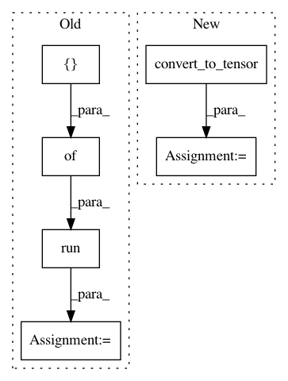

f7c759ca562303127a9991574d5a985d4dff99e8,sonnet/python/modules/basic_rnn_test.py,VanillaRNNTest,testComputation,#VanillaRNNTest#,86
Before Change
def testComputation(self):
inputs = tf.placeholder(tf.float32, shape=[self.batch_size, self.in_size])
prev_state = tf.placeholder(tf.float32,
shape=[self.batch_size, self.hidden_size])
vanilla_rnn = snt.VanillaRNN(name="rnn", hidden_size=self.hidden_size)
output, next_state = vanilla_rnn(inputs, prev_state)
in_to_hid = vanilla_rnn.in_to_hidden_variables
hid_to_hid = vanilla_rnn.hidden_to_hidden_variables
with self.test_session() as sess:
// With random data, check the TF calculation matches the Numpy version.
input_data = np.random.randn(self.batch_size, self.in_size)
prev_state_data = np.random.randn(self.batch_size, self.hidden_size)
tf.global_variables_initializer().run()
fetches = [output, next_state, in_to_hid[0], in_to_hid[1],
hid_to_hid[0], hid_to_hid[1]]
output = sess.run(fetches,
{inputs: input_data, prev_state: prev_state_data})
output_v, next_state_v, in_to_hid_w, in_to_hid_b = output[:4]
hid_to_hid_w, hid_to_hid_b = output[4:]
real_in_to_hid = np.dot(input_data, in_to_hid_w) + in_to_hid_b
After Change
input_data = np.random.randn(self.batch_size, self.in_size)
prev_state_data = np.random.randn(self.batch_size, self.hidden_size)
inputs = tf.convert_to_tensor(input_data)
prev_state = tf.convert_to_tensor(prev_state_data)
vanilla_rnn = snt.VanillaRNN(name="rnn", hidden_size=self.hidden_size)
output, next_state = vanilla_rnn(inputs, prev_state)
in_to_hid = vanilla_rnn.in_to_hidden_variables
hid_to_hid = vanilla_rnn.hidden_to_hidden_variables
In pattern: SUPERPATTERN
Frequency: 3
Non-data size: 6
Instances
Project Name: deepmind/sonnet
Commit Name: f7c759ca562303127a9991574d5a985d4dff99e8
Time: 2018-07-17
Author: tomhennigan@google.com
File Name: sonnet/python/modules/basic_rnn_test.py
Class Name: VanillaRNNTest
Method Name: testComputation
Project Name: tensorflow/models
Commit Name: 855d29dba61a53553e8fc89237773368fd7e9cdf
Time: 2020-07-29
Author: sbeery@google.com
File Name: research/object_detection/dataset_tools/context_rcnn/generate_embedding_data.py
Class Name: GenerateEmbeddingDataFn
Method Name: _run_inference_and_generate_embedding
Project Name: tensorflow/models
Commit Name: 855d29dba61a53553e8fc89237773368fd7e9cdf
Time: 2020-07-29
Author: sbeery@google.com
File Name: research/object_detection/dataset_tools/context_rcnn/generate_detection_data.py
Class Name: GenerateDetectionDataFn
Method Name: _run_inference_and_generate_detections